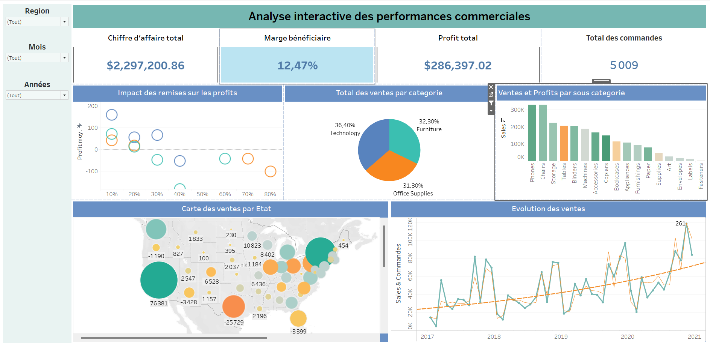

Projets & Dashboards

Vision+ – Analyse Vente & Retours Produits
Vue interactive de la performance commerciale et gestion des retours.
Voir plus
Analyse Commerciale – Tableau Desktop
Suivi des performances produits, rentabilité et segmentation client.
Voir plus
DigitalNext – Suivi des Retours Produits
Export PDF automatisé via Power Automate et indicateurs clés.
Voir plus
VisionPlus – Performance Commerciale (Looker)
Analyse croisée des marges et retours produits sur Looker Studio.
Voir plus
Analyse SharePoint – Fichiers & Répertoires
Détection des doublons, formats et volumétrie des fichiers partagés.
Voir plus
Analyse des Mails – Interactions & Suivi
Analyse des échanges internes : volume, fréquence et segmentation.
Voir plus
Analyse des Mails – Cas Métiers
Analyse détaillée des clusters métier et des volumes de mails.
Voir plus
Suivi des Demandes – Power BI
Analyse complète des demandes internes : créations, modifications, typologies et performance.
Voir plus